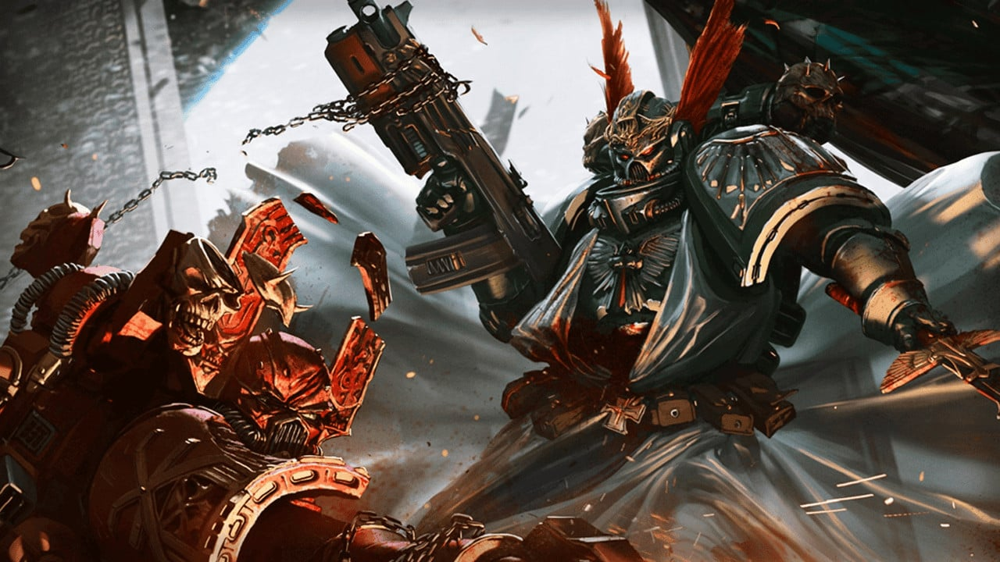

The First Legion
The First Legion, now called the Dark Angels, is one of the most storied and tragic chapters in the history of the Space Marines.
History of the First Legion
The First Legion was the first of the original Space Marine chapters created by the Emperor of Mankind. It was known for its discipline, honor, and being the Jack of all Trades of the Space Marines, but it was also marked by tragedy. The chapter was split due to the corruption of Chaos among the leaders of the chapter, leading to the events of the Destruction of Caliban, the Homeworld of the Dark Angels. The Destruction of Caliban has led to Lion El'Jonson to be entombed within the Rock Fortress that remains of their homeworld.
The betrayal of Luther, Lion's foster father and mentor, has lead the chapter into a state of constant paranoia and mistrust. Due to the betrayal, the chapter has sealed away the records of the history and logs of the time during the Horus Heresy, with the chapter leaders and senior members of the 1st Company have dediocated themselves to hunting down the Fallen, those who fought against their own brothers, with the hope that it will redeem the Dark Angels of their sins.